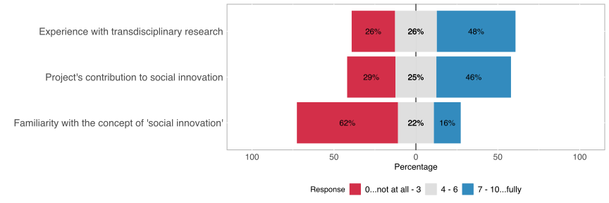
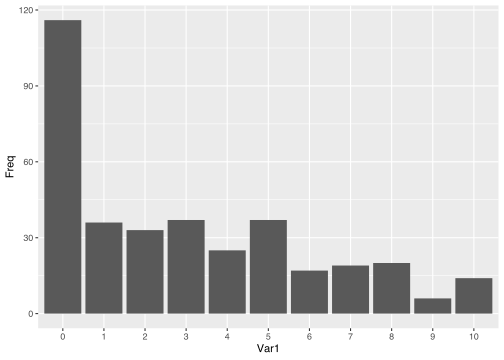
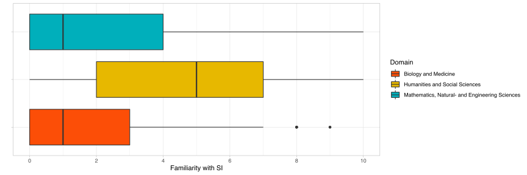

 > TODO: Description of B1
The majority of the respondents indicated their low familiarity with SI, approximately %32 of the respondents selected the lowest level of SI familiarity (indicated with 0) and only %16 percent of the respondents selected a value equal or greater than 7.
One of the literature-driven assumptions about the SI-familiarity was that [H] the SI-Familiarity depends on the scientific domain. The hypothesis is motivated by the wide-spread perspective especially on the SSH fields to be more aware of the SI aspect in research.
The results of the study shows a statistically significant difference between the 3 main scientific domains in the SNF funded projects (Kruskal-Wallis [K-W] rank sum test p-value < 0.05). However, the domains Mathemics, Natural, & Engineering Sciences and Biology & Medicine are stat. not significantly different from each other ()
as Figure @ref(type:B1-boxplot) visualises the pairwise differences (pairwise Wilcoxon Test (WT), p-value > 0.05). However SSH Domain shows a significant
## Scale for 'fill' is already present. Adding another scale for 'fill', which
## will replace the existing scale.## Warning: Removed 1 rows containing non-finite values (stat_boxplot).
Familiarity with SI differs across scientific domains (Kruskal-Wallis p-value < 0.05)
Biology and Medicine and Math., Natur, and Eng. Sci. are not stat. significantly different (pairwise Wilcoxon p-value > 0.05)
Humanities and Social Sciences are significantly different than the others (pairwise t-test with each: p < 0.05)